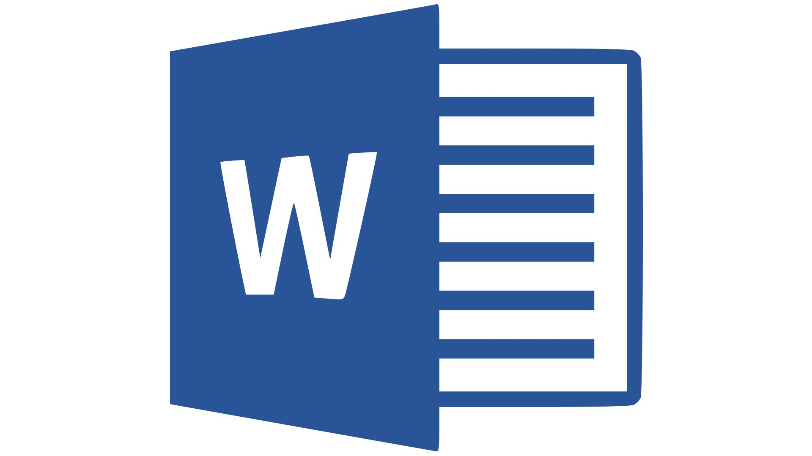
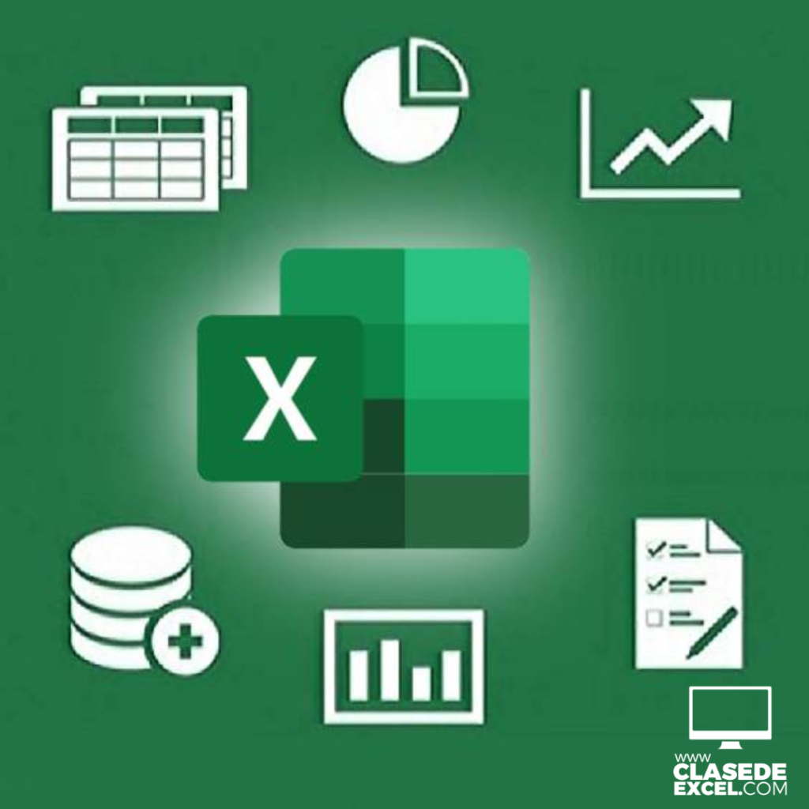
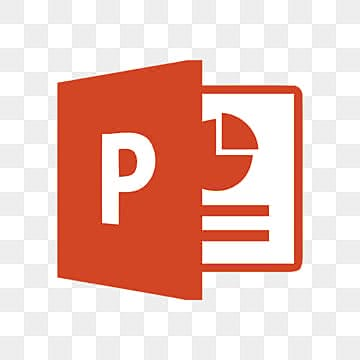
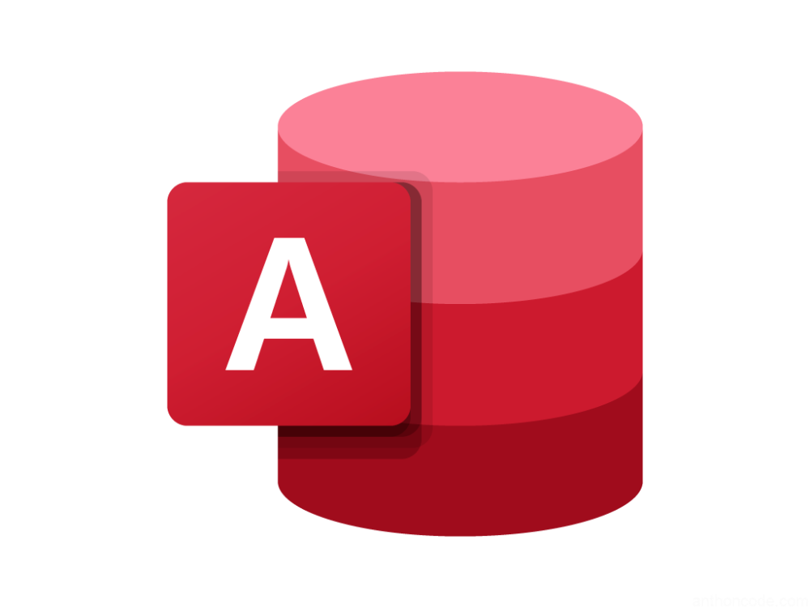
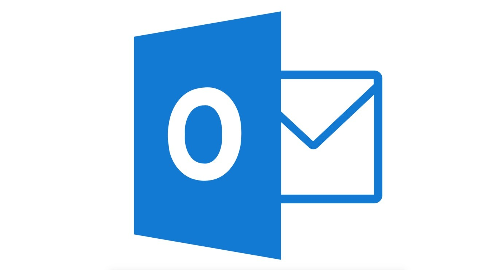
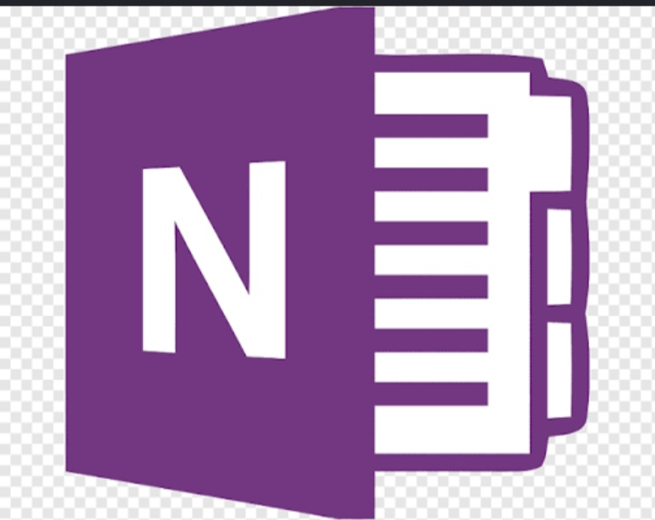
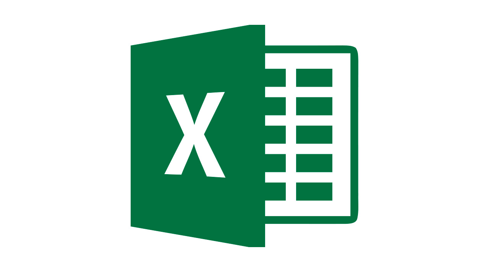
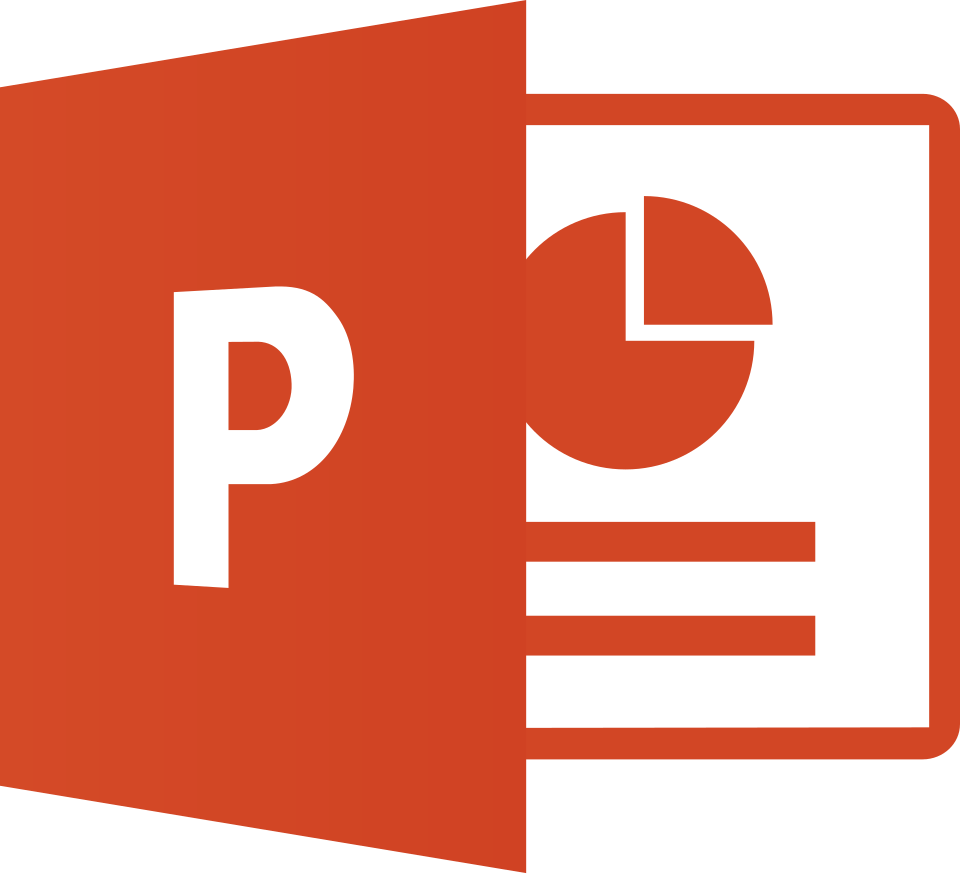
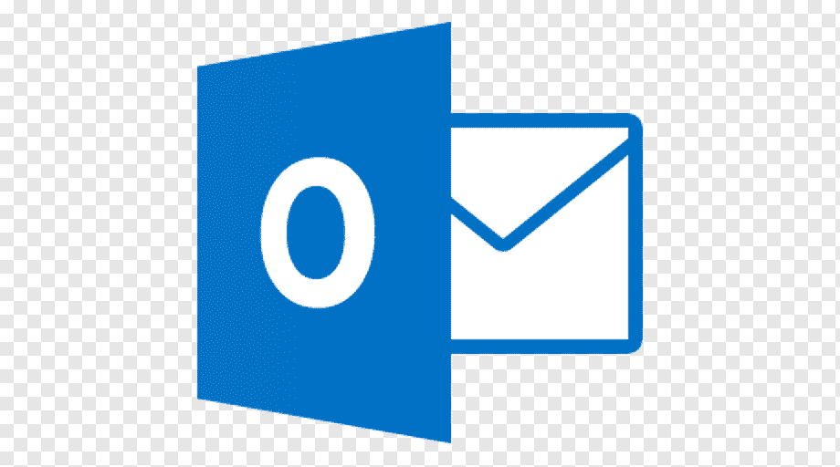

La suite de productividad más utilizada del mundo. Documentos, hojas de cálculo, presentaciones, bases de datos y herramientas colaborativas.
Explorar AplicacionesMicrosoft Office nació en 1989 y con el tiempo se convirtió en una de las herramientas más importantes para estudiantes, empresas y profesionales. Actualmente forma parte de Microsoft 365.

Procesador de texto profesional.

Hojas de cálculo y análisis de datos.

Presentaciones dinámicas.

Administración de bases de datos.

Correo electrónico y calendario.

Notas digitales inteligentes.



| Programa | Función | Uso |
|---|---|---|
| Word | Procesador de texto | Documentos |
| Excel | Hoja de cálculo | Cálculos |
| PowerPoint | Presentaciones | Diapositivas |
| Access | Base de datos | Información |
| Outlook | Correo electrónico | Comunicación |
| OneNote | Notas | Organización |
1. ¿Qué programa se utiliza para crear documentos?
Completa el examen para obtener tu resultado.
Es uno de los procesadores de texto más utilizados del mundo.
Puede manejar millones de datos en una sola hoja.
Se utiliza en escuelas, universidades y empresas.
Año de lanzamiento de Microsoft Office.
Usuarios en todo el mundo.
Aplicaciones principales incluidas.